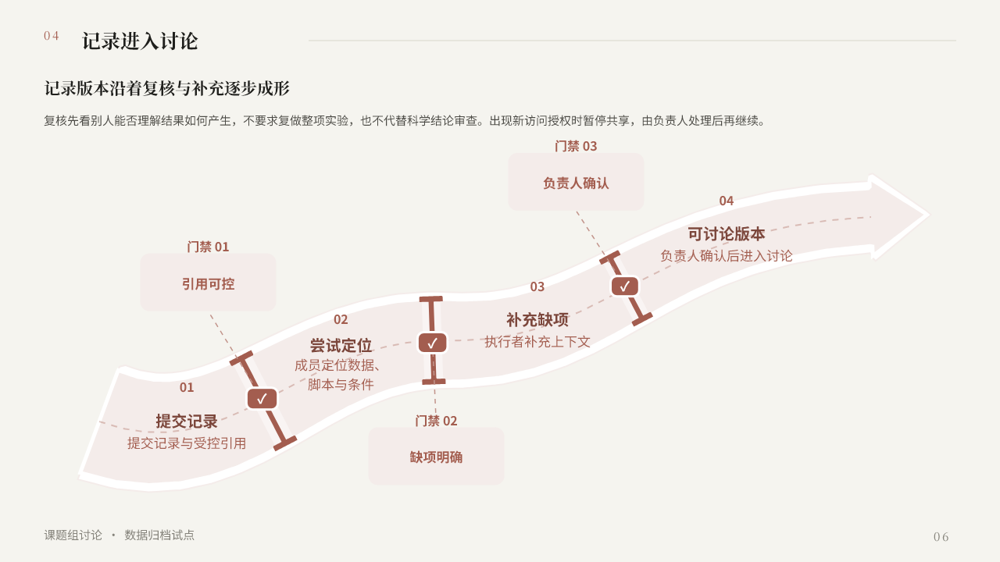
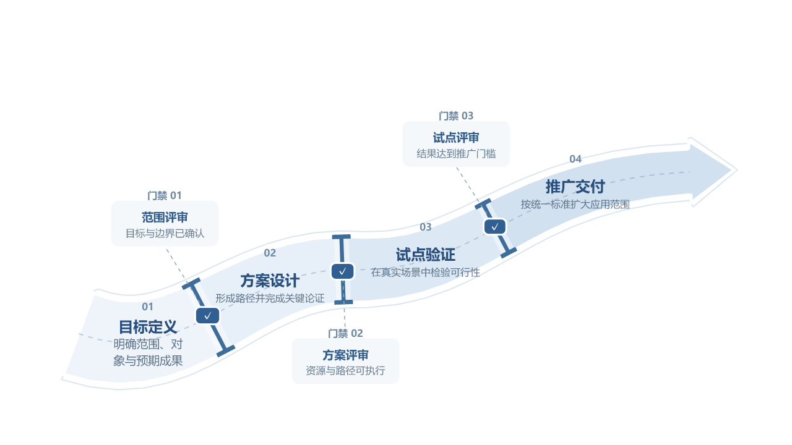

A 是你已认可的版本；B 由 Luna high 保留结构库河道与门闸造型，适配中性主题后编排。比较表达效果，不替换原稿。
方框、细线和文字条件，主要保留流程逻辑。

保留河道、门闸与关系路径，文字内容使用同一份原稿。下载单页可编辑 PPT

用于核对造型保留程度；示例内容与本稿无关。
原版检查点：neutral-magazine-approved-20260906。新版本仅供对比讨论。实验记录
neutral-magazine-approved-20260906